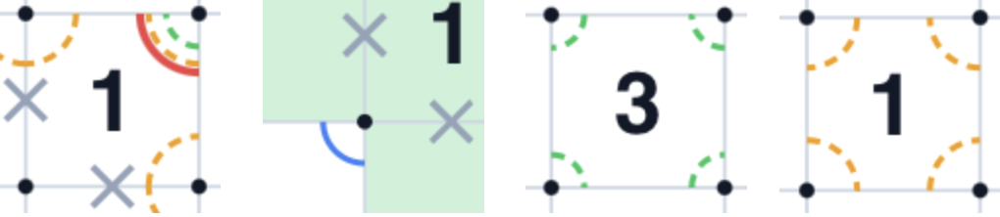
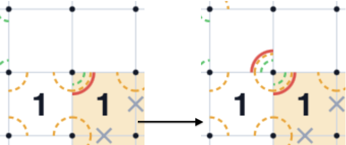
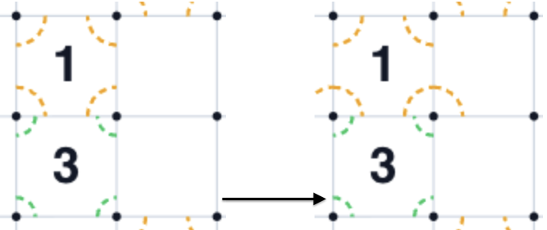
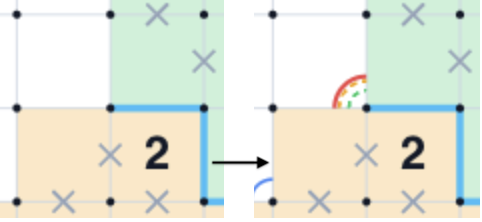
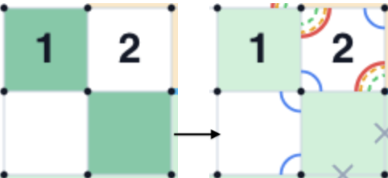
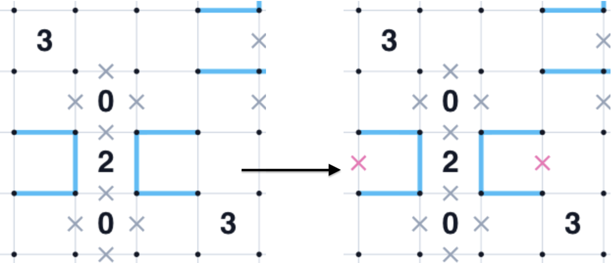
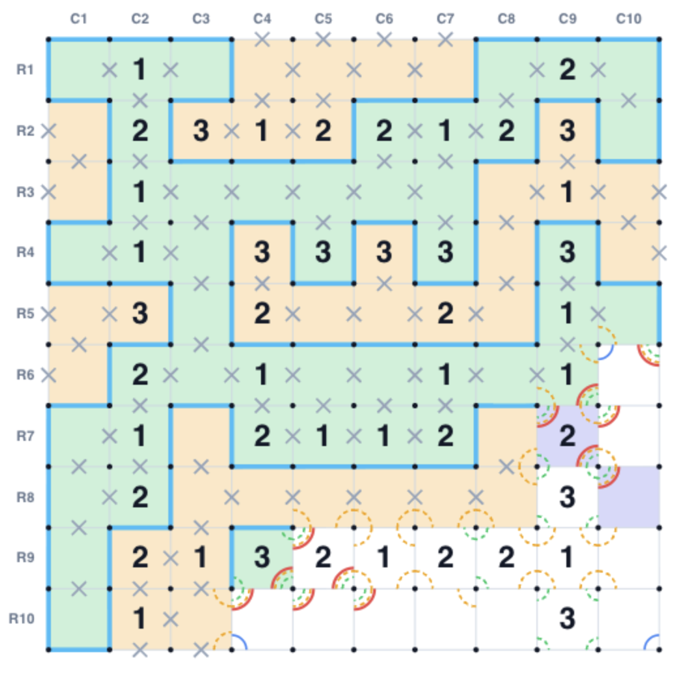
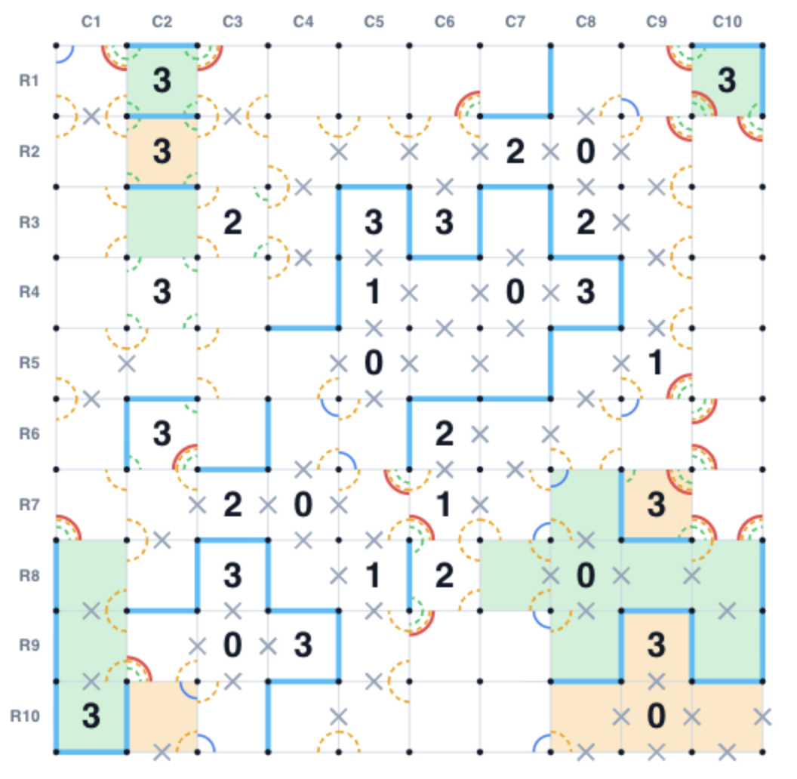

解谜｜「应该」怎样求解数回 (Slitherlink) ｜其二¶
零、前置阅读¶
第一篇文章十分简单地讲了一些数回的基本规则、求解策略、基础范式，以及写作文章的动机。参考这几篇文章。
本文和“其一”一样，试图回答在 “How to solve” 数回谜题的基础上追问一句 “How should we solve”，探讨数回谜题求解的可解释性，并试图找到一套可用性强、泛化性高的规则组合，顺带罗列一些自己看过的有趣资料。
回顾：扇区 (sector)¶
扇区 (Sector) 在数回的情景下，指一个单元格的某个顶点上的两条相邻边组成的扇形。也就是，一个Sector指示“两条共顶点的边”的状态。
根据前一篇，我们定义下面几种形态的扇区：
- ONLY_1（恰好一条）：扇区中的两条边恰好有一条是线段，另一条是叉号
- NOT_1（不是一条）：扇区中的两条边要么都是线段，要么都是叉号，用双蓝弧表示；
- NOT_0（不是零条）：扇区中至少有一条线段，用双虚线绿弧表示；
- NOT_2（不是两条）：扇区中至多有一条线段，用虚线红弧表示
我们定义如下的标记，区分这几种情况：
| 扇区 | 图案 |
|---|---|
| ONLY_1 | 红色 实 弧线 |
| NOT_1 | 蓝色 实 弧线 |
| NOT_0 | 绿色 虚 弧线 |
| NOT_2 | 黄色 虚 弧线 |
示例如下：

从左往右：数字格为 1，有一个sector两边都被 cross，那么剩下的那个sector必定是 ONLY_1；
一个没有数字的格子，它某个sector 的对角两个边都被叉掉，那么，根据一个顶点要么2边要么0边的规则， 这个sector 不能只有 1 边（NOT_1）；
对于数字 3，它的每一个 sector 必然都是 NOT_0，因为如果有某两条边均 Cross，剩下的就构不成 3 边了；
对于数字 1，它的每一个 sector 必然都是 NOT_2，因为如果有某两边都 Line，那必然违背数字；
在前一篇文章的最后，快速讨论了关于多扇区的组合推导、奇偶性判断等，这里不赘述。
对角 Sector 的传播¶
目前，Sector 的推断还存在传播性较弱的问题，事实上，不少Sector可以得到到对角相邻的、另一个格子的 Sector 属性。这里的对角相邻，用 North/South/East/West 表示法可以视作：
- 当前格的
nwSector 推到左上 cell 的seSector - 当前格的
neSector 推到右上 cell 的swSector - 当前格的
swSector 推到左下 cell 的neSector - 当前格的
seSector 推到右下 cell 的nwSector
我们把当前 Sector 称作 A，对角 Ssector 称为 B。于是：
若 A 格为 ONLY_1，那么 B 也是 ONLY_1.

若 A 格为 NOT_0，那么 B 一定是 NOT_2 .

若 A 格为 NOT_1，那么 B 也是 NOT_1 .
就不附图了。三个情况均可用度数规则证明。
这一部分主要的功能就是将 Sector 进行传播，拓展到更多格子里，或许能触发更多的推断。
Sector + Color 的组合推断¶
在先前的描述中，扇区 (Sector) 和 染色 (Color) 是相对独立的推断工具，但是他们存在一些相互关系，实际的可量化推理链条构建中，二者是相互促进的关系。试举一例。
如果两个对角相邻的格子颜色不同，那么他们所夹外侧的 Sector 必然是 ONLY_1 的。

就算我们忽略掉现有的 Cross 和 Line，不借助任何数字，我们依然可以做出上述推断。这是显而易见的。我们记上图4个格子分别 (0,0), (0,1), (1,0), (1,1)。。
如果这个 Sector 是 0，根据 Color 理论，共享 Cross 边的两个格子颜色相同，那么，颜色上就有 (0,1) == (0,0) == (1,0)，这和前提矛盾； 如果这个 Sector 是 2，根据 Color 理论，共享 Line 边的两个格子颜色不同，那么 (0,1) != (0,0)，并且 (0,0) != (1, 0)，所以 (0,1) == (1,0)，又和前提矛盾。
同时，这个规则的逆命题依然是成立的。即：如果一个 Sector 是 ONLY_1 的，那么覆盖该Sector2边且对角相邻的两个格子的颜色一定是不同的。
原理类似。同时需要注意，这个规则针对边界格也是成立的，即“对角格”是可以超出盘面的。类似我们在前一篇文章讨论的那样，我们可以默认每个外侧格子都默认和一个巨大的黄色虚拟格子相邻。
另一组Sector + Color的推断与 NOT_1 有关。
如果两个对角相邻的格子颜色相同，那么他们所夹外侧的 Sector 必然是 NOT_1 的。

同样关注两个绿色格子。我们先不看数字 2 个字的推断是怎么实现的，我们只用关注斜向同色格子导致最中间顶点的两个 Sector 为 NOT_1。原理同上。罗列一下为 1 的情况即可反证。
这个命题的逆命题同样是成立的。
Clue + Color 的组合推断¶
染色是整个数回推理中一种全新的理解问题的方式，它剥离开传统的连线，用一种全新的、基于方格的方式理解问题。同样地，需要时刻谨记，数回是一个“全局”游戏，我们尽可能多地根据盘面确定格子的颜色、线段情况，才有可能进一步推进求解思路。
下面我们会密集地讨论若干个基于染色的求解方式。这部分是染色 + 线索数的推断。
由于异色格子数量等于当前格子的“边”的数量，于是我们轻松得到一个出发点：
如果当前格是 yellow，那么周围 green 邻居数量就是线数；如果当前格是 green ，那么周围 yellow 邻居数量就是线数。
于是我们得到这样一组零碎规则，首先记当前格数字为 clue。一个通用规则是：
-
如果
clue< green 邻居数量，或者 4 -clue< yellow 邻居数量，那么当前格一定是green。 -
如果
clue< yellow 邻居数量，或者 4 -clue< green 邻居数量，那么当前格一定是yellow。 -
如果当前格是 green，
clue= yellow 邻居数量，那么剩下未知邻居都不能再是 yellow，只能是 green，反之亦然。
针对具体的数字，也可以继续推理，比如：
对 clue = 2 来说，四邻中必然有两个和当前格同色、两个异色。换句话说，周围最终会是两个 green、两个 yellow 。
- 所以如果已经看到两个 yellow 邻居数量，剩下未知邻居全是 green；反之亦然。
对 clue = 1 或 clue = 3，周围已经有一绿一黄时，无论当前格自己是什么颜色，和这两个邻格相邻的边，一定是一条线、一条叉。
- 所以：对
clue = 1：不与两个染色格相邻的边都是叉。对clue = 3：不与两个染色格相邻的边都是线。
多余环检测¶
一个往往被忽略的技巧：整个图里必须只有一个完整的环，因此，如果连接某条边会导致成环，并且，除了这个环之外还有其他的连通分量，那么这个边一定不能连接。
比如，下图是一个大图中的局部示意图，会构成子环路的地方必须被删掉。

基于局部策略的推断、常用的标记语言，两篇文章基本介绍完了，但是如果试图实现一个基于规则和分步推断的Slitherlink 求解工具，看看僵硬的规则在强大而精巧的谜题前无能为力的时候，你就知道这个谜题的乐趣了，试举几例：


原因很简单，再怎么折腾这些局部推断，最好的情况也只是从全盘的不同区域向内进行推理，但是并不能保证我们获得一个全局层面的感知，有的推理，尤其是连通性、染色/同色/异色性，依赖于更加强大的分析求解工具，而那或许是第三篇文章的内容了。
下一篇文章会讨论一些：
- 我们可以用上什么工具解决这个谜题？
- 为了简单实现一个可解释的求解器，我尝试了什么。